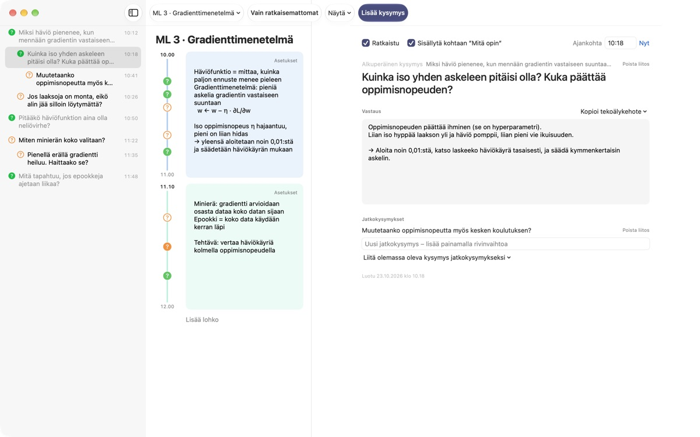
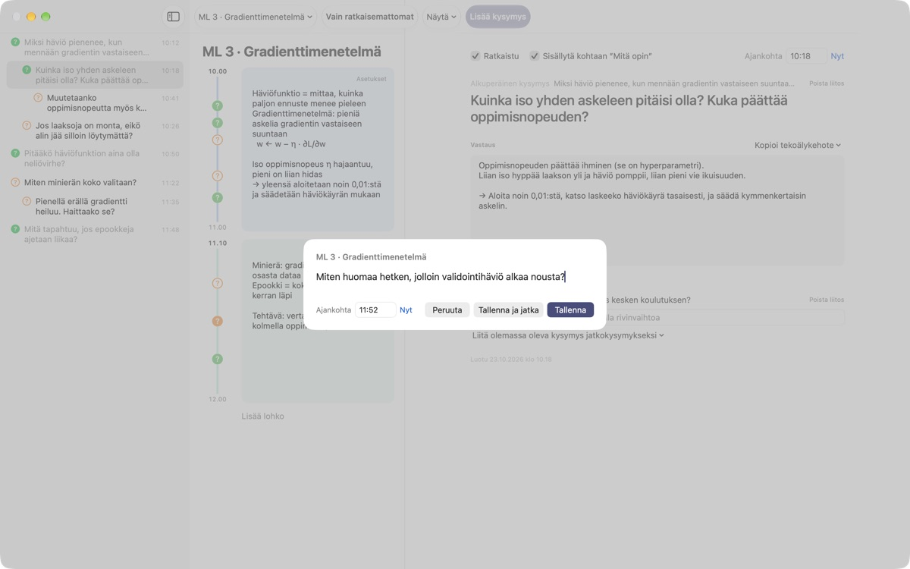
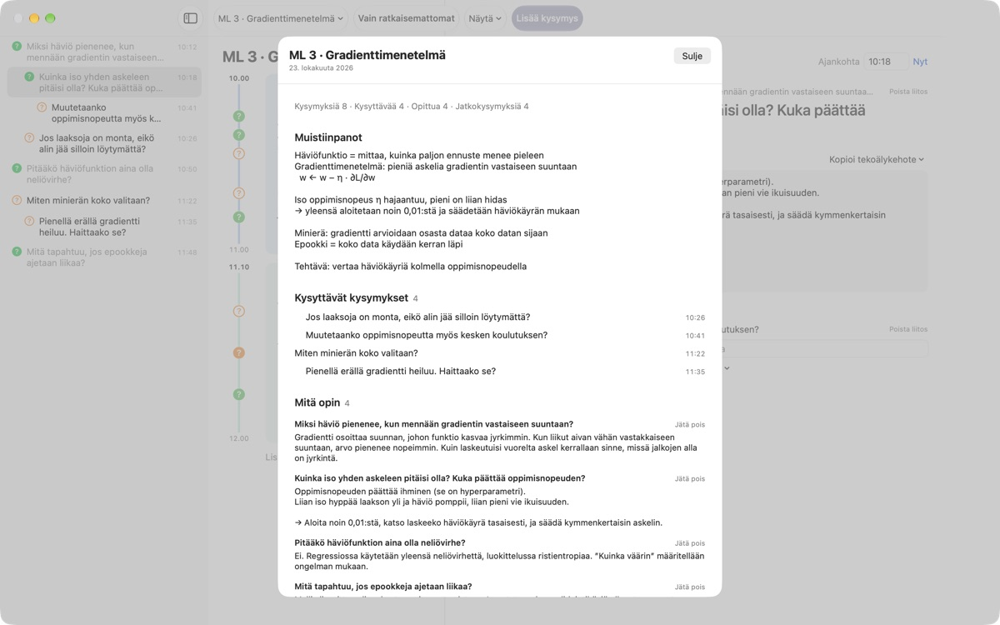
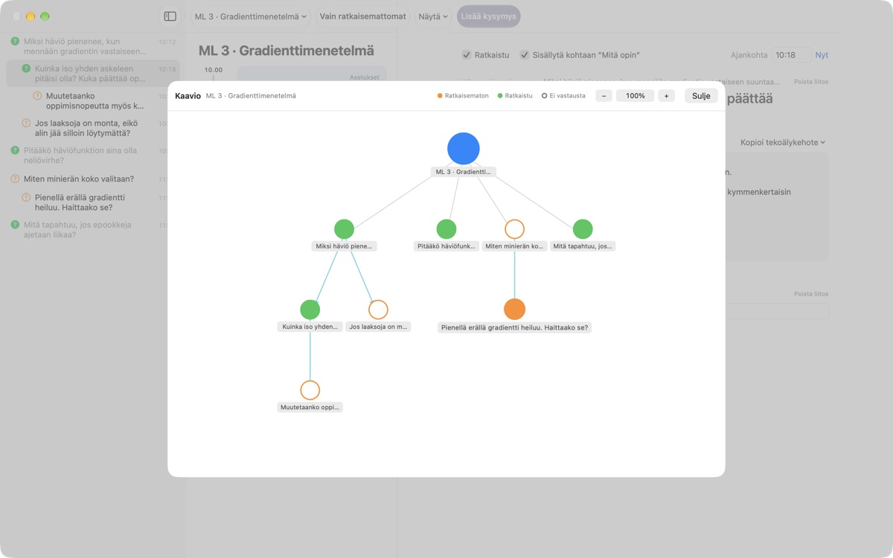

Älä anna luennolla heränneen
kysymyksen karata
Paina ⌘⇧N, kirjoita rivi, ja kysymys tallentuu juuri sen minuutin muistiinpanojesi viereen. Kuuntelet eteenpäin ja etsit vastauksen myöhemmin.
macOS 14 tai uudempi. Ei tiliä, kaikki pysyy tällä Macilla.

Kokeile tässä
Istut koneoppimisen luennolla. Kirjoita kysymys ja tallenna se, niin sen kellonajan lohkon viereen ilmestyy ?. Vaihda aika lohkojen ulkopuolelle, niin sille syntyy uusi lohko.
Muistatko luennon jälkeen vielä, mitä halusit kysyä?
Heti kun ajattelet ”hetkinen, miksi?”, luennoitsija on jo seuraavassa asiassa. Marginaalin kysymysmerkki ei enää muista, mihin selitykseen se liittyi, ja kysymys jää vaille vastausta. LectureQ kiinnittää jokaisen kysymyksen sen hetken muistiinpanoihin ja pitää sen esillä, kunnes olet selvittänyt asian.
Kysy menettämättä seuraavaa lausetta
Avaa syöttöikkuna työkalupalkin Lisää kysymys -painikkeella tai ⌘⇧N:llä. Kellonaika täyttyy itsestään. Return tallentaa, ja ⌘Return tallentaa ja valmistaa saman tien seuraavaan.
Jokainen kysymys näkyy ?-merkkinä oman aikalohkonsa vieressä, joten myöhemmin näet heti, mistä luennon kohdasta se syntyi.

Ratkaistusta kysymyksestä tulee opittua
Kirjoita vastaus omin sanoin, merkitse kysymys ratkaistuksi, ja se siirtyy yhteenvedossa kohtaan Mitä opin. Avoimet jäävät kohtaan Kysyttävät kysymykset, joten lista seuraavaa kertaa varten syntyy itsestään.
Kysymyksen tiedoissa Kopioi tekoälykehote vie leikepöydälle valmiin kehotteen, jossa on luennon nimi ja sen hetken muistiinpanosi. Liitä se tekoälypalveluun, jota jo käytät.

Näe, mihin ajatuksesi veivät
Jatkokysymykset asettuvat sisennettyinä sen kysymyksen alle, josta ne syntyivät, ja kaavio yhdistää ne nuolilla. Klikkaa solmua, niin pääset suoraan kysymykseen.
Oppimistilanteeseen kirjaat, missä olet nyt, missä haluat olla kurssin lopussa ja mitä haluat oppia, ja voit verrata niitä.

Alkuun kolmessa vaiheessa
- 1
Luo luento
Työkalupalkin vasemman reunan luentovalikosta, tai tuo Markdownina tallennettu keskustelu.
- 2
Kirjaa heti, kun kysymys herää
Paina
⌘⇧N. Yksi rivi riittää, ja kellonaika on jo valmiina. - 3
Vastaa myöhemmin
Kirjoita vastaus ja klikkaa ?-merkkiä merkitäksesi kysymyksen ratkaistuksi. Se siirtyy kohtaan Mitä opin.
Pikanäppäimet
- ⌘⇧N
- Lisää kysymys
- Return
- Tallenna
- ⌘Return
- Tallenna ja kirjoita seuraava
- Esc
- Peruuta
- ⌘1
- Yhteenveto: kysyttävät, opitut, muistiinpanot
- ⌘2
- Kaavio: alkuperäiset kysymykset ja jatkokysymykset
- ⌘3
- Aikalohkot: kaikkien luentojen lohkot aikajärjestyksessä
- ⌘4
- Oppimistilanne
- ⌘+ · ⌘- · ⌘0
- Suurempi teksti, pienempi teksti, oletuskoko
Löydät ne kaikki myös Näytä-valikosta.
Kaikki ominaisuudet ovat ilmaisia
Ilmainen
- Pikakysymykset ja aikalohkojen muistiinpanot
- Jatkokysymykset ja kaavio
- Yhteenveto, aikalohkojen kokonaiskuva ja Oppimistilanne
- Viisivaiheiset tekoälykehotteet leikepöydälle
- Keskustelujen tuonti Markdownista
Tue kehittäjää
- Lähetä pieni tippi asetuksista, jos sovellus auttaa sinua
- Tippi ei avaa mitään lisää
Kaikki toimii samoin, annoit tipin tai et.
Ei mainoksia, ei tiliä. Muistiinpanosi pysyvät tällä Macilla.
Usein kysyttyä
Mitä ?-merkin värit tarkoittavat?
Luettelossa tyhjä oranssi ympyrä on vielä ratkaisematon kysymys ja täytetty vihreä ratkaistu. Klikkaa ?-merkkiä vaihtaaksesi, ja kytke työkalupalkista Vain ratkaisemattomat nähdäksesi vain avoimet. Aikalohkon vieressä väri kertoo, onko kysymys ratkaistu, ja täytetty ympyrä, että vastaus on jo kirjoitettu.
Miten aikalohkot toimivat?
Lisää lohko aloittaa uuden lohkon sillä hetkellä, ja edellinen päättyy siihen. Jos kirjaat kysymyksen aikaan, jota mikään lohko ei kata, sen ympärille luodaan lohko. Lohkon oikean yläkulman Asetukset -kohdasta muutat väriä, alkuaikaa ja kestoa tai poistat lohkon. Jos poistat lohkon itse, se luento lakkaa luomasta lohkoja automaattisesti.
Mitä eroa on kohdilla Ratkaistu ja Mitä opin?
Kun rastitat kysymyksen tiedoissa Ratkaistu, valitset samalla, lasketaanko se kohtaan Mitä opin. Siellä näkyvät vain ratkaistut kysymykset, jotka olet ottanut mukaan. Voit myös poistaa tai palauttaa niitä yhteenvedosta, ja vastaus säilyy.
Miten tekoälykehotteet toimivat?
Avaa kysymyksen tiedoissa Vastaus-kohdan vierestä Kopioi tekoälykehote ja valitse vaihe: Tarkenna kysymystä, Etsi vastaus, Haasta vastaus, Poimi jatkokysymykset tai Pyydä arvio vastauksestani. Leikepöydälle kopioituu kehote, jossa on luennon nimi, sen hetken muistiinpanosi, oppimistilanteesi ja alkuperäinen kysymys. Itse kehoteteksti on toistaiseksi koreaksi; useimmat tekoälypalvelut ymmärtävät sen silti, ja voit pyytää vastausta suomeksi. Arvion pyytäminen edellyttää, että olet ensin kirjoittanut oman vastauksesi. Sovellus ei itse ole koskaan yhteydessä tekoälypalveluun.
Voinko tuoda Markdownina tallennetun keskustelun?
Valitse luentovalikosta Tuo Markdownista…. # Otsikko on luennon nimi, ja jokaisessa ## Osio -kohdassa ensimmäinen kysymys on alkuperäinen ja seuraavat jatkokysymyksiä. Tiedostossa ensimmäisenä puhuvan repliikeistä tulee kysymyksiä ja muiden repliikeistä vastaus edeltävään kysymykseen. Alkuperäistä tiedostoa ei muuteta.
Miten poistan kysymyksen tai luennon?
Napsauta kysymystä luettelossa hiiren oikealla ja valitse Poista. Luennon poistat luentovalikon kohdalla Poista nykyinen luento; sen kysymykset ja lohkot lähtevät mukana. Poistoa ei voi perua, joten varmuuskopioi tärkeät tiedot ensin.
Mihin tietoni tallentuvat ja miten varmuuskopioin ne?
Kaikki pysyy tällä Macilla eikä mitään ladata verkkoon. Lopeta sovellus ja kopioi koko kansio ~/Library/Containers/com.lectureq.LectureQ/Data/Library/Application Support/LectureQ/ myös -wal- ja -shm-tiedostoineen. Sovellus lähettää vain nimettömiä käyttötilastoja, kuten version ja avauspäivät, ei koskaan kirjoittamiasi asioita.
Teksti on liian pientä.
⌘+ suurentaa, ⌘- pienentää ja ⌘0 palauttaa oletuskoon. Kokoa voi säätää 85 %:sta 200 %:iin, ja asetus säilyy.
Millä Maceilla sovellus toimii?
Kaikilla Maceilla, joissa on macOS 14 tai uudempi. Lähdekoodi on avoimesti GitHubissa osoitteessa M1zz/LectureQ.
Jokin ei toimi. Kenelle ilmoitan?
Lähetä palautetta sovelluksen asetuksista (⌘,) tai kirjoita alla olevaan osoitteeseen. Kerro macOS-versiosi ja mitä olit tekemässä, niin pääsemme asiaan nopeammin.
Kysyttävää tai palautetta? Kirjoita osoitteeseen mizzking75@gmail.com.